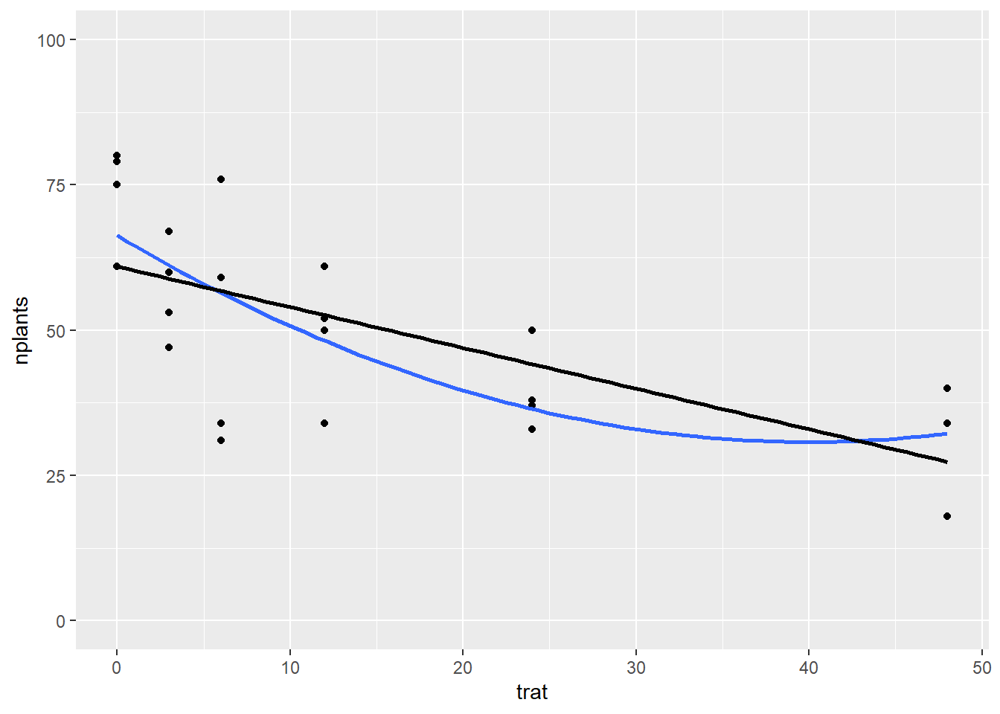

library(gsheet)
library(tidyverse)
library(AgroR)
library(r4pde)
library(broom)
library(patchwork)vdvd
Regressão
Pacotes usados
Importar dados
estande <- gsheet2tbl("https://docs.google.com/spreadsheets/d/1bq2N19DcZdtax2fQW9OHSGMR0X2__Z9T/edit#gid=401662555")Visualizar
estande |>
ggplot(aes(trat, nplants))+
geom_jitter(width = 0.1, color = "darkgrey")+
facet_wrap(~ exp)+
stat_summary(fun.data = "mean_cl_boot", size = 0.5, color = "darkblue")+
geom_smooth(method = "lm", se = T)
regressão experimento 1
exp1 <- estande |>
filter(exp == 1)
exp1 |>
ggplot(aes(trat, nplants))+
geom_point()+
ylim(0,100)+
geom_smooth(se = F)
#modelo linear
lm1<- lm(nplants ~ trat, data = exp1)
summary(lm1)
Call:
lm(formula = nplants ~ trat, data = exp1)
Residuals:
Min 1Q Median 3Q Max
-25.500 -6.532 1.758 8.573 27.226
Coefficients:
Estimate Std. Error t value Pr(>|t|)
(Intercept) 52.5000 4.2044 12.487 1.84e-11 ***
trat -0.2419 0.1859 -1.301 0.207
---
Signif. codes: 0 '***' 0.001 '**' 0.01 '*' 0.05 '.' 0.1 ' ' 1
Residual standard error: 15 on 22 degrees of freedom
Multiple R-squared: 0.07148, Adjusted R-squared: 0.02928
F-statistic: 1.694 on 1 and 22 DF, p-value: 0.2066anova(lm1)Analysis of Variance Table
Response: nplants
Df Sum Sq Mean Sq F value Pr(>F)
trat 1 381.0 381.05 1.6937 0.2066
Residuals 22 4949.5 224.98 Experimento 2
exp2 <- estande |>
filter(exp == 2)
exp2 |>
ggplot(aes(trat, nplants))+
geom_point()+
ylim(0,100)+
geom_smooth(se = F, method = "lm")
#modelo linear
lm2<- lm(nplants ~ trat, data = exp2)
summary(lm2)
Call:
lm(formula = nplants ~ trat, data = exp2)
Residuals:
Min 1Q Median 3Q Max
-25.7816 -7.7150 0.5653 8.1929 19.2184
Coefficients:
Estimate Std. Error t value Pr(>|t|)
(Intercept) 60.9857 3.6304 16.798 4.93e-14 ***
trat -0.7007 0.1605 -4.365 0.000247 ***
---
Signif. codes: 0 '***' 0.001 '**' 0.01 '*' 0.05 '.' 0.1 ' ' 1
Residual standard error: 12.95 on 22 degrees of freedom
Multiple R-squared: 0.4641, Adjusted R-squared: 0.4398
F-statistic: 19.05 on 1 and 22 DF, p-value: 0.0002473anova(lm2)Analysis of Variance Table
Response: nplants
Df Sum Sq Mean Sq F value Pr(>F)
trat 1 3196.2 3196.2 19.054 0.0002473 ***
Residuals 22 3690.4 167.7
---
Signif. codes: 0 '***' 0.001 '**' 0.01 '*' 0.05 '.' 0.1 ' ' 1Experimento 3
exp3 <- estande |>
filter(exp == 3)
exp3 |>
ggplot(aes(trat, nplants))+
geom_point()+
ylim(0,100)+
geom_smooth(se = F, method = "lm")
#modelo linear
lm3<- lm(nplants ~ trat, data = exp3)
summary(lm3)
Call:
lm(formula = nplants ~ trat, data = exp3)
Residuals:
Min 1Q Median 3Q Max
-26.5887 -3.9597 0.7177 5.5806 19.8952
Coefficients:
Estimate Std. Error t value Pr(>|t|)
(Intercept) 95.7500 2.9529 32.425 < 2e-16 ***
trat -0.7634 0.1306 -5.847 6.97e-06 ***
---
Signif. codes: 0 '***' 0.001 '**' 0.01 '*' 0.05 '.' 0.1 ' ' 1
Residual standard error: 10.53 on 22 degrees of freedom
Multiple R-squared: 0.6085, Adjusted R-squared: 0.5907
F-statistic: 34.19 on 1 and 22 DF, p-value: 6.968e-06anova(lm3)Analysis of Variance Table
Response: nplants
Df Sum Sq Mean Sq F value Pr(>F)
trat 1 3794.3 3794.3 34.189 6.968e-06 ***
Residuals 22 2441.5 111.0
---
Signif. codes: 0 '***' 0.001 '**' 0.01 '*' 0.05 '.' 0.1 ' ' 1hist(residuals(lm3))
Comparação de modelos GLM com Galssian e Poisson
quanto menor o AIC melhor
glm1 <- glm(nplants ~ trat, family = "gaussian", data = exp1)
glm1
Call: glm(formula = nplants ~ trat, family = "gaussian", data = exp1)
Coefficients:
(Intercept) trat
52.5000 -0.2419
Degrees of Freedom: 23 Total (i.e. Null); 22 Residual
Null Deviance: 5330
Residual Deviance: 4949 AIC: 202summary(glm1)
Call:
glm(formula = nplants ~ trat, family = "gaussian", data = exp1)
Coefficients:
Estimate Std. Error t value Pr(>|t|)
(Intercept) 52.5000 4.2044 12.487 1.84e-11 ***
trat -0.2419 0.1859 -1.301 0.207
---
Signif. codes: 0 '***' 0.001 '**' 0.01 '*' 0.05 '.' 0.1 ' ' 1
(Dispersion parameter for gaussian family taken to be 224.9751)
Null deviance: 5330.5 on 23 degrees of freedom
Residual deviance: 4949.5 on 22 degrees of freedom
AIC: 202
Number of Fisher Scoring iterations: 2AIC(glm1)[1] 202.0045glm1b <- glm(nplants ~trat, family = poisson(link = "log"), data = exp1)
summary(glm1b)
Call:
glm(formula = nplants ~ trat, family = poisson(link = "log"),
data = exp1)
Coefficients:
Estimate Std. Error z value Pr(>|z|)
(Intercept) 3.963738 0.039359 100.708 < 2e-16 ***
trat -0.005199 0.001862 -2.793 0.00523 **
---
Signif. codes: 0 '***' 0.001 '**' 0.01 '*' 0.05 '.' 0.1 ' ' 1
(Dispersion parameter for poisson family taken to be 1)
Null deviance: 111.37 on 23 degrees of freedom
Residual deviance: 103.31 on 22 degrees of freedom
AIC: 243.58
Number of Fisher Scoring iterations: 4AIC(glm1b)[1] 243.5839Experimento 2
glm2 <- glm(nplants ~ trat, family = "gaussian", data = exp2)
glm2
Call: glm(formula = nplants ~ trat, family = "gaussian", data = exp2)
Coefficients:
(Intercept) trat
60.9857 -0.7007
Degrees of Freedom: 23 Total (i.e. Null); 22 Residual
Null Deviance: 6887
Residual Deviance: 3690 AIC: 195AIC(glm2)[1] 194.9597glm2b <- glm(nplants ~trat, family = poisson(link = "log"), data = exp2)
summary(glm2b)
Call:
glm(formula = nplants ~ trat, family = poisson(link = "log"),
data = exp2)
Coefficients:
Estimate Std. Error z value Pr(>|z|)
(Intercept) 4.134189 0.037583 110.003 < 2e-16 ***
trat -0.016270 0.002059 -7.901 2.76e-15 ***
---
Signif. codes: 0 '***' 0.001 '**' 0.01 '*' 0.05 '.' 0.1 ' ' 1
(Dispersion parameter for poisson family taken to be 1)
Null deviance: 139.783 on 23 degrees of freedom
Residual deviance: 69.578 on 22 degrees of freedom
AIC: 210.24
Number of Fisher Scoring iterations: 4AIC(glm2b)[1] 210.2353Experimento 3
glm3 <- glm(nplants ~ trat, family = "gaussian", data = exp3)
summary(glm3)
Call:
glm(formula = nplants ~ trat, family = "gaussian", data = exp3)
Coefficients:
Estimate Std. Error t value Pr(>|t|)
(Intercept) 95.7500 2.9529 32.425 < 2e-16 ***
trat -0.7634 0.1306 -5.847 6.97e-06 ***
---
Signif. codes: 0 '***' 0.001 '**' 0.01 '*' 0.05 '.' 0.1 ' ' 1
(Dispersion parameter for gaussian family taken to be 110.9787)
Null deviance: 6235.8 on 23 degrees of freedom
Residual deviance: 2441.5 on 22 degrees of freedom
AIC: 185.04
Number of Fisher Scoring iterations: 2AIC(glm3)[1] 185.0449glm3b <- glm(nplants ~ trat, family = "poisson" (link = log), data = exp3)
summary(glm3b)
Call:
glm(formula = nplants ~ trat, family = poisson(link = log), data = exp3)
Coefficients:
Estimate Std. Error z value Pr(>|z|)
(Intercept) 4.571590 0.029539 154.762 < 2e-16 ***
trat -0.009965 0.001488 -6.697 2.13e-11 ***
---
Signif. codes: 0 '***' 0.001 '**' 0.01 '*' 0.05 '.' 0.1 ' ' 1
(Dispersion parameter for poisson family taken to be 1)
Null deviance: 77.906 on 23 degrees of freedom
Residual deviance: 29.952 on 22 degrees of freedom
AIC: 183.93
Number of Fisher Scoring iterations: 4AIC(glm3b)[1] 183.9324ajuste de modelo linear e quadrático
exp2 <- estande |>
filter(exp == 2)
#modelo quadratico
exp2 |>
ggplot(aes(trat, nplants))+
geom_point()+
ylim(0,100)+
geom_smooth(se = F,
method = "lm",
formula = y ~ poly(x,2))+
geom_smooth( method = "lm",
se = F,
color = "black")
#modelo linear
lm2<- lm(nplants ~ trat,
data = exp2)
summary(lm2)
Call:
lm(formula = nplants ~ trat, data = exp2)
Residuals:
Min 1Q Median 3Q Max
-25.7816 -7.7150 0.5653 8.1929 19.2184
Coefficients:
Estimate Std. Error t value Pr(>|t|)
(Intercept) 60.9857 3.6304 16.798 4.93e-14 ***
trat -0.7007 0.1605 -4.365 0.000247 ***
---
Signif. codes: 0 '***' 0.001 '**' 0.01 '*' 0.05 '.' 0.1 ' ' 1
Residual standard error: 12.95 on 22 degrees of freedom
Multiple R-squared: 0.4641, Adjusted R-squared: 0.4398
F-statistic: 19.05 on 1 and 22 DF, p-value: 0.0002473anova(lm2)Analysis of Variance Table
Response: nplants
Df Sum Sq Mean Sq F value Pr(>F)
trat 1 3196.2 3196.2 19.054 0.0002473 ***
Residuals 22 3690.4 167.7
---
Signif. codes: 0 '***' 0.001 '**' 0.01 '*' 0.05 '.' 0.1 ' ' 1exp2$trat2 <- exp2$trat^2
#primeira ordem
exp2$trat2 <- exp2$trat^2
# segunda ordem ou quadratico
lm3<- lm(nplants ~trat + trat2,
data = exp2)
summary(lm3)
Call:
lm(formula = nplants ~ trat + trat2, data = exp2)
Residuals:
Min 1Q Median 3Q Max
-25.439 -6.019 1.789 8.016 19.561
Coefficients:
Estimate Std. Error t value Pr(>|t|)
(Intercept) 66.30156 4.42097 14.997 1.08e-12 ***
trat -1.77720 0.58467 -3.040 0.00623 **
trat2 0.02223 0.01166 1.906 0.07036 .
---
Signif. codes: 0 '***' 0.001 '**' 0.01 '*' 0.05 '.' 0.1 ' ' 1
Residual standard error: 12.24 on 21 degrees of freedom
Multiple R-squared: 0.5432, Adjusted R-squared: 0.4997
F-statistic: 12.49 on 2 and 21 DF, p-value: 0.0002675#o r2 aumentou, explicando MELHOR. 50% DA VARIAÇÃO
AIC(lm2)[1] 194.9597AIC(lm3)[1] 193.1284#o modelo quadratico explica melhor
#a equação olha no summary
#y=66,3 - 1,77*TRAT+0,02*TRAT^2
library(AgroR)
#linear
with(exp2, polynomial(trat, nplants, grau = 1))
----------------------------------------------------
Regression Models
----------------------------------------------------
Estimate Std. Error t value Pr(>|t|)
(Intercept) 60.9857143 3.6304377 16.798447 4.929311e-14
trat -0.7006912 0.1605226 -4.365063 2.473272e-04
----------------------------------------------------
Deviations from regression
----------------------------------------------------
Df SSq MSQ F p-value
Linear 1 3196.203 3196.2031 21.82329 0.0001899378
Deviation 4 1054.172 263.5430 1.79944 0.1729687460
Residual 18 2636.250 146.4583 [[1]]
#quadratico (explicou melhor)
with(exp2, polynomial(trat, nplants, grau = 2))
----------------------------------------------------
Regression Models
----------------------------------------------------
Estimate Std. Error t value Pr(>|t|)
(Intercept) 66.30156250 4.42096799 14.997069 1.079972e-12
trat -1.77719814 0.58467380 -3.039640 6.230050e-03
I(trat^2) 0.02222876 0.01165948 1.906496 7.036247e-02
----------------------------------------------------
Deviations from regression
----------------------------------------------------
Df SSq MSQ F p-value
Linear 1 3196.2031 3196.2031 21.823293 0.0001899378
Quadratic 1 544.5029 544.5029 3.717801 0.0697619482
Deviation 3 509.6690 169.8897 1.159986 0.3523240106
Residual 18 2636.2500 146.4583 [[1]]
# cubica
# normalmente não utiliza
with(exp2, polynomial(trat, nplants, grau = 3))
----------------------------------------------------
Regression Models
----------------------------------------------------
Estimate Std. Error t value Pr(>|t|)
(Intercept) 70.265143802 5.300440019 13.256474 2.295186e-11
trat -3.609380523 1.514625525 -2.383018 2.720299e-02
I(trat^2) 0.140522077 0.091192577 1.540938 1.390058e-01
I(trat^3) -0.001712445 0.001309648 -1.307561 2.058546e-01
----------------------------------------------------
Deviations from regression
----------------------------------------------------
Df SSq MSQ F p-value
Linear 1 3196.2031 3196.2031 21.8232929 0.0001899378
Quadratic 1 544.5029 544.5029 3.7178008 0.0697619482
Cubic 1 247.7520 247.7520 1.6916208 0.2097934169
Deviation 2 261.9170 130.9585 0.8941691 0.4263523326
Residual 18 2636.2500 146.4583 [[1]]
wm <- WhiteMoldSoybean
wm |>
ggplot(aes(inc, yld))+
geom_point()+
facet_wrap(~ study)
wm |>
ggplot(aes(inc, yld, group = factor(study)))+
geom_point()+
#facet_wrap(~ study)+
geom_smooth(method = "lm", se = F)
theme_minimal()List of 136
$ line :List of 6
..$ colour : chr "black"
..$ linewidth : num 0.5
..$ linetype : num 1
..$ lineend : chr "butt"
..$ arrow : logi FALSE
..$ inherit.blank: logi TRUE
..- attr(*, "class")= chr [1:2] "element_line" "element"
$ rect :List of 5
..$ fill : chr "white"
..$ colour : chr "black"
..$ linewidth : num 0.5
..$ linetype : num 1
..$ inherit.blank: logi TRUE
..- attr(*, "class")= chr [1:2] "element_rect" "element"
$ text :List of 11
..$ family : chr ""
..$ face : chr "plain"
..$ colour : chr "black"
..$ size : num 11
..$ hjust : num 0.5
..$ vjust : num 0.5
..$ angle : num 0
..$ lineheight : num 0.9
..$ margin : 'margin' num [1:4] 0points 0points 0points 0points
.. ..- attr(*, "unit")= int 8
..$ debug : logi FALSE
..$ inherit.blank: logi TRUE
..- attr(*, "class")= chr [1:2] "element_text" "element"
$ title : NULL
$ aspect.ratio : NULL
$ axis.title : NULL
$ axis.title.x :List of 11
..$ family : NULL
..$ face : NULL
..$ colour : NULL
..$ size : NULL
..$ hjust : NULL
..$ vjust : num 1
..$ angle : NULL
..$ lineheight : NULL
..$ margin : 'margin' num [1:4] 2.75points 0points 0points 0points
.. ..- attr(*, "unit")= int 8
..$ debug : NULL
..$ inherit.blank: logi TRUE
..- attr(*, "class")= chr [1:2] "element_text" "element"
$ axis.title.x.top :List of 11
..$ family : NULL
..$ face : NULL
..$ colour : NULL
..$ size : NULL
..$ hjust : NULL
..$ vjust : num 0
..$ angle : NULL
..$ lineheight : NULL
..$ margin : 'margin' num [1:4] 0points 0points 2.75points 0points
.. ..- attr(*, "unit")= int 8
..$ debug : NULL
..$ inherit.blank: logi TRUE
..- attr(*, "class")= chr [1:2] "element_text" "element"
$ axis.title.x.bottom : NULL
$ axis.title.y :List of 11
..$ family : NULL
..$ face : NULL
..$ colour : NULL
..$ size : NULL
..$ hjust : NULL
..$ vjust : num 1
..$ angle : num 90
..$ lineheight : NULL
..$ margin : 'margin' num [1:4] 0points 2.75points 0points 0points
.. ..- attr(*, "unit")= int 8
..$ debug : NULL
..$ inherit.blank: logi TRUE
..- attr(*, "class")= chr [1:2] "element_text" "element"
$ axis.title.y.left : NULL
$ axis.title.y.right :List of 11
..$ family : NULL
..$ face : NULL
..$ colour : NULL
..$ size : NULL
..$ hjust : NULL
..$ vjust : num 1
..$ angle : num -90
..$ lineheight : NULL
..$ margin : 'margin' num [1:4] 0points 0points 0points 2.75points
.. ..- attr(*, "unit")= int 8
..$ debug : NULL
..$ inherit.blank: logi TRUE
..- attr(*, "class")= chr [1:2] "element_text" "element"
$ axis.text :List of 11
..$ family : NULL
..$ face : NULL
..$ colour : chr "grey30"
..$ size : 'rel' num 0.8
..$ hjust : NULL
..$ vjust : NULL
..$ angle : NULL
..$ lineheight : NULL
..$ margin : NULL
..$ debug : NULL
..$ inherit.blank: logi TRUE
..- attr(*, "class")= chr [1:2] "element_text" "element"
$ axis.text.x :List of 11
..$ family : NULL
..$ face : NULL
..$ colour : NULL
..$ size : NULL
..$ hjust : NULL
..$ vjust : num 1
..$ angle : NULL
..$ lineheight : NULL
..$ margin : 'margin' num [1:4] 2.2points 0points 0points 0points
.. ..- attr(*, "unit")= int 8
..$ debug : NULL
..$ inherit.blank: logi TRUE
..- attr(*, "class")= chr [1:2] "element_text" "element"
$ axis.text.x.top :List of 11
..$ family : NULL
..$ face : NULL
..$ colour : NULL
..$ size : NULL
..$ hjust : NULL
..$ vjust : num 0
..$ angle : NULL
..$ lineheight : NULL
..$ margin : 'margin' num [1:4] 0points 0points 2.2points 0points
.. ..- attr(*, "unit")= int 8
..$ debug : NULL
..$ inherit.blank: logi TRUE
..- attr(*, "class")= chr [1:2] "element_text" "element"
$ axis.text.x.bottom : NULL
$ axis.text.y :List of 11
..$ family : NULL
..$ face : NULL
..$ colour : NULL
..$ size : NULL
..$ hjust : num 1
..$ vjust : NULL
..$ angle : NULL
..$ lineheight : NULL
..$ margin : 'margin' num [1:4] 0points 2.2points 0points 0points
.. ..- attr(*, "unit")= int 8
..$ debug : NULL
..$ inherit.blank: logi TRUE
..- attr(*, "class")= chr [1:2] "element_text" "element"
$ axis.text.y.left : NULL
$ axis.text.y.right :List of 11
..$ family : NULL
..$ face : NULL
..$ colour : NULL
..$ size : NULL
..$ hjust : num 0
..$ vjust : NULL
..$ angle : NULL
..$ lineheight : NULL
..$ margin : 'margin' num [1:4] 0points 0points 0points 2.2points
.. ..- attr(*, "unit")= int 8
..$ debug : NULL
..$ inherit.blank: logi TRUE
..- attr(*, "class")= chr [1:2] "element_text" "element"
$ axis.text.theta : NULL
$ axis.text.r :List of 11
..$ family : NULL
..$ face : NULL
..$ colour : NULL
..$ size : NULL
..$ hjust : num 0.5
..$ vjust : NULL
..$ angle : NULL
..$ lineheight : NULL
..$ margin : 'margin' num [1:4] 0points 2.2points 0points 2.2points
.. ..- attr(*, "unit")= int 8
..$ debug : NULL
..$ inherit.blank: logi TRUE
..- attr(*, "class")= chr [1:2] "element_text" "element"
$ axis.ticks : list()
..- attr(*, "class")= chr [1:2] "element_blank" "element"
$ axis.ticks.x : NULL
$ axis.ticks.x.top : NULL
$ axis.ticks.x.bottom : NULL
$ axis.ticks.y : NULL
$ axis.ticks.y.left : NULL
$ axis.ticks.y.right : NULL
$ axis.ticks.theta : NULL
$ axis.ticks.r : NULL
$ axis.minor.ticks.x.top : NULL
$ axis.minor.ticks.x.bottom : NULL
$ axis.minor.ticks.y.left : NULL
$ axis.minor.ticks.y.right : NULL
$ axis.minor.ticks.theta : NULL
$ axis.minor.ticks.r : NULL
$ axis.ticks.length : 'simpleUnit' num 2.75points
..- attr(*, "unit")= int 8
$ axis.ticks.length.x : NULL
$ axis.ticks.length.x.top : NULL
$ axis.ticks.length.x.bottom : NULL
$ axis.ticks.length.y : NULL
$ axis.ticks.length.y.left : NULL
$ axis.ticks.length.y.right : NULL
$ axis.ticks.length.theta : NULL
$ axis.ticks.length.r : NULL
$ axis.minor.ticks.length : 'rel' num 0.75
$ axis.minor.ticks.length.x : NULL
$ axis.minor.ticks.length.x.top : NULL
$ axis.minor.ticks.length.x.bottom: NULL
$ axis.minor.ticks.length.y : NULL
$ axis.minor.ticks.length.y.left : NULL
$ axis.minor.ticks.length.y.right : NULL
$ axis.minor.ticks.length.theta : NULL
$ axis.minor.ticks.length.r : NULL
$ axis.line : list()
..- attr(*, "class")= chr [1:2] "element_blank" "element"
$ axis.line.x : NULL
$ axis.line.x.top : NULL
$ axis.line.x.bottom : NULL
$ axis.line.y : NULL
$ axis.line.y.left : NULL
$ axis.line.y.right : NULL
$ axis.line.theta : NULL
$ axis.line.r : NULL
$ legend.background : list()
..- attr(*, "class")= chr [1:2] "element_blank" "element"
$ legend.margin : 'margin' num [1:4] 5.5points 5.5points 5.5points 5.5points
..- attr(*, "unit")= int 8
$ legend.spacing : 'simpleUnit' num 11points
..- attr(*, "unit")= int 8
$ legend.spacing.x : NULL
$ legend.spacing.y : NULL
$ legend.key : list()
..- attr(*, "class")= chr [1:2] "element_blank" "element"
$ legend.key.size : 'simpleUnit' num 1.2lines
..- attr(*, "unit")= int 3
$ legend.key.height : NULL
$ legend.key.width : NULL
$ legend.key.spacing : 'simpleUnit' num 5.5points
..- attr(*, "unit")= int 8
$ legend.key.spacing.x : NULL
$ legend.key.spacing.y : NULL
$ legend.frame : NULL
$ legend.ticks : NULL
$ legend.ticks.length : 'rel' num 0.2
$ legend.axis.line : NULL
$ legend.text :List of 11
..$ family : NULL
..$ face : NULL
..$ colour : NULL
..$ size : 'rel' num 0.8
..$ hjust : NULL
..$ vjust : NULL
..$ angle : NULL
..$ lineheight : NULL
..$ margin : NULL
..$ debug : NULL
..$ inherit.blank: logi TRUE
..- attr(*, "class")= chr [1:2] "element_text" "element"
$ legend.text.position : NULL
$ legend.title :List of 11
..$ family : NULL
..$ face : NULL
..$ colour : NULL
..$ size : NULL
..$ hjust : num 0
..$ vjust : NULL
..$ angle : NULL
..$ lineheight : NULL
..$ margin : NULL
..$ debug : NULL
..$ inherit.blank: logi TRUE
..- attr(*, "class")= chr [1:2] "element_text" "element"
$ legend.title.position : NULL
$ legend.position : chr "right"
$ legend.position.inside : NULL
$ legend.direction : NULL
$ legend.byrow : NULL
$ legend.justification : chr "center"
$ legend.justification.top : NULL
$ legend.justification.bottom : NULL
$ legend.justification.left : NULL
$ legend.justification.right : NULL
$ legend.justification.inside : NULL
$ legend.location : NULL
$ legend.box : NULL
$ legend.box.just : NULL
$ legend.box.margin : 'margin' num [1:4] 0cm 0cm 0cm 0cm
..- attr(*, "unit")= int 1
$ legend.box.background : list()
..- attr(*, "class")= chr [1:2] "element_blank" "element"
$ legend.box.spacing : 'simpleUnit' num 11points
..- attr(*, "unit")= int 8
[list output truncated]
- attr(*, "class")= chr [1:2] "theme" "gg"
- attr(*, "complete")= logi TRUE
- attr(*, "validate")= logi TRUE #primeiro
mofo1 <- lm(yld ~ inc, data = wm)
summary(mofo1)
Call:
lm(formula = yld ~ inc, data = wm)
Residuals:
Min 1Q Median 3Q Max
-1657.85 -594.50 -91.32 531.76 1693.15
Coefficients:
Estimate Std. Error t value Pr(>|t|)
(Intercept) 3299.619 56.451 58.451 < 2e-16 ***
inc -9.261 2.108 -4.393 1.45e-05 ***
---
Signif. codes: 0 '***' 0.001 '**' 0.01 '*' 0.05 '.' 0.1 ' ' 1
Residual standard error: 745.8 on 380 degrees of freedom
Multiple R-squared: 0.04833, Adjusted R-squared: 0.04582
F-statistic: 19.3 on 1 and 380 DF, p-value: 1.452e-05#quanto de produtividade ta perdendo pra cada percentual? -9.261 kg#segundo
mofo2 <- wm |>
group_by(study) |>
do (tidy(lm(.$yld ~ .$inc), conf.int = TRUE))
mofo2# A tibble: 70 × 8
# Groups: study [35]
study term estimate std.error statistic p.value conf.low conf.high
<dbl> <chr> <dbl> <dbl> <dbl> <dbl> <dbl> <dbl>
1 1 (Intercept) 3329. 86.8 38.3 4.60e-13 3138. 3520.
2 1 .$inc -14.2 2.08 -6.85 2.78e- 5 -18.8 -9.64
3 2 (Intercept) 2682. 48.6 55.2 8.55e-15 2575. 2789.
4 2 .$inc -6.93 1.49 -4.66 6.89e- 4 -10.2 -3.66
5 3 (Intercept) 4017. 61.6 65.2 1.37e-15 3882. 4153.
6 3 .$inc -18.6 1.71 -10.9 3.11e- 7 -22.4 -14.9
7 4 (Intercept) 2814. 151. 18.6 1.15e- 9 2481. 3147.
8 4 .$inc -43.5 16.8 -2.58 2.56e- 2 -80.5 -6.38
9 5 (Intercept) 3317. 234. 14.2 2.07e- 8 2802. 3832.
10 5 .$inc -21.2 5.69 -3.72 3.36e- 3 -33.7 -8.67
# ℹ 60 more rowsp3 <- mofo2 |>
filter(term == "(Intercept)") |>
ggplot(aes(x = estimate))+
geom_histogram(bins = 8, color = "white", fill = "gray50")+
theme_r4pde()+
labs(x = "Intercept", y = "Frequency")
p4 <- mofo2 |>
filter(term == ".$inc") |>
ggplot(aes(x = estimate))+
geom_histogram(bins = 8, color = "white", fill = "gray50")+
theme_r4pde()+
labs(x = "Slope", y = "Frequency")
p3|p4
df <- mofo2 %>%
filter(term == ".$inc")
mean(df$estimate)[1] -19.52932